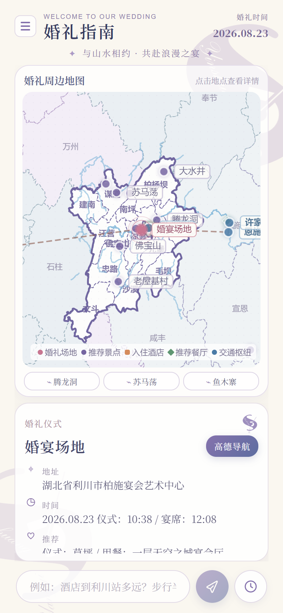
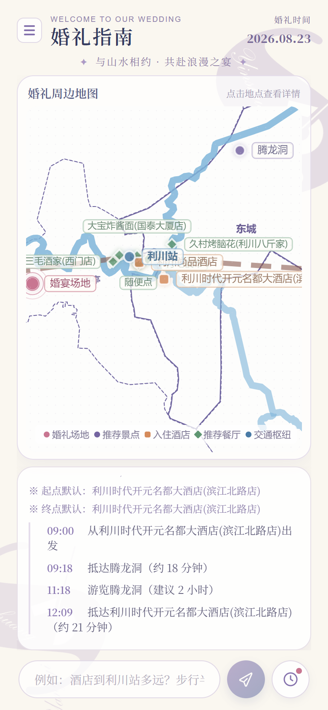
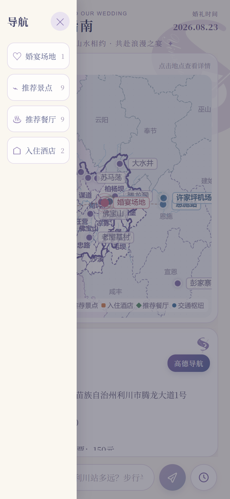
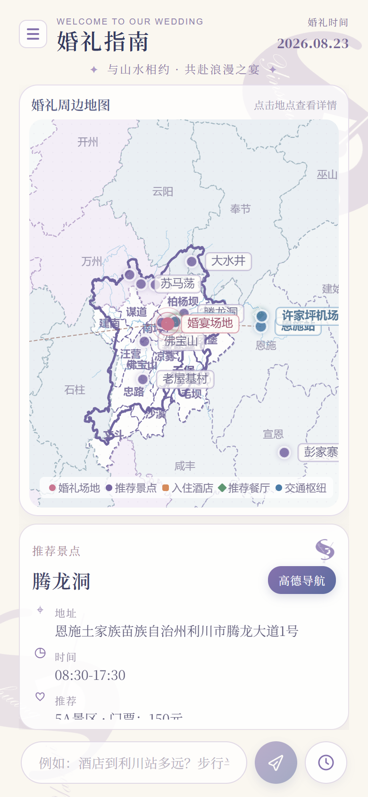
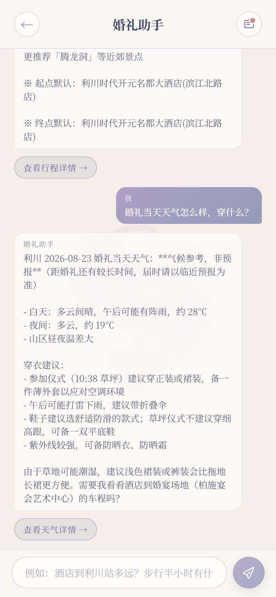
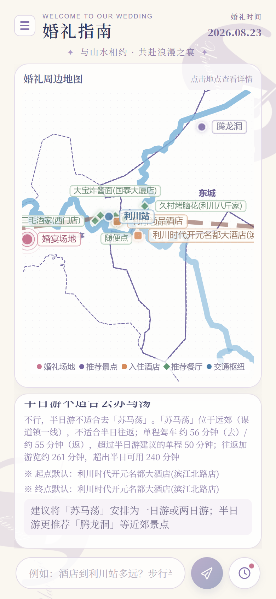
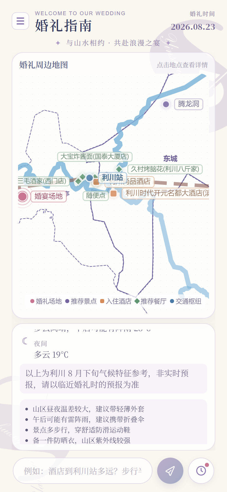

确定信息直接呈现
婚宴时间、地点、推荐清单和导航入口放在页面主路径上，宾客无需先与 AI 对话。
02 / AI PRODUCT PRACTICE
婚礼宾客指南 · H5
可查、可问、可出发。一张地图连接婚礼场地与旅途中的地点；需要安排时，再向婚礼助手提问。


宾客初次来到利川，除了婚宴时间与地点，还要临时查交通、酒店和周边去处。朋友也有自己想推荐的景点和餐厅。这个项目把分散的信息整理成一份能直接使用的 H5：先找到确定信息，再按自己的行程探索。
不用下载，不用注册。微信里点开邀请函上的链接，三步解决出行问题。
婚宴、酒店、景点、餐厅、交通枢纽五类点位画在自绘的利川地图上。点点位或从分类导航进入，信息卡切换、地图飞过去，一键唤起高德导航。


「酒店到利川站多远？」「帮我规划半日游」。距离和时长来自高德路线；行程按车程、建议游玩时长和 30 分钟缓冲排出时间轴，结果以卡片呈现，地图同步聚焦。

宾客可以向婚礼助手询问路程、半日或一日游安排，以及天气穿搭。助手把相关信息组织成便于行动的回答。


婚宴时间、地点、推荐清单和导航入口放在页面主路径上，宾客无需先与 AI 对话。
涉及距离、驾车时长或天气时，设计上让助手依赖地图与天气工具，避免凭语言模型估算。
推荐内容通过数据源维护；核心地点保留本地备用数据，减少外部服务波动对基础浏览的影响。
浏览路径把婚宴信息、地点数据、地图和导航组织在一起；问答路径由 LLM 理解问题，在需要事实校验时调用路线与天气能力，再生成行程建议。固定内容和智能问答互相补充。
按真实应用的界面、样式和交互逻辑还原：可拖动、缩放地图，查看分类地点与详情，体验路线查询、行程规划、天气建议和对话记录。